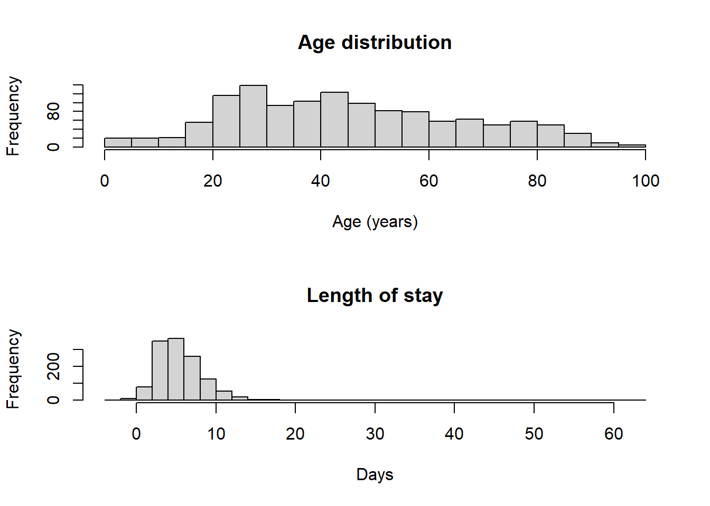
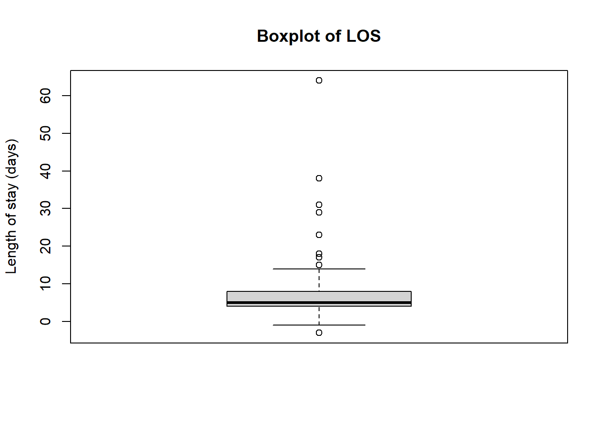
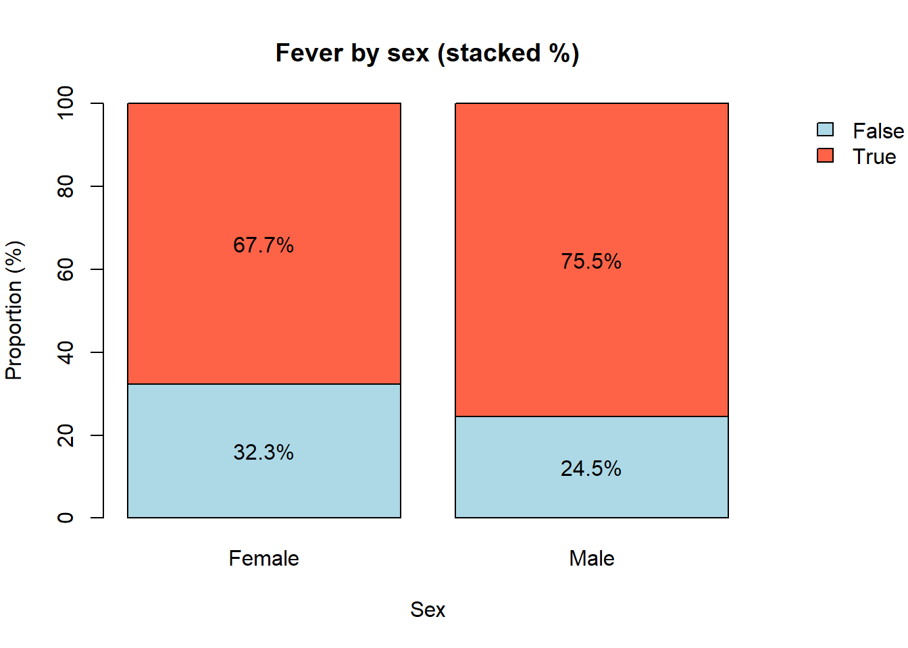

sep <- function(title) {
cat("\n\n==================== ", title, " ====================\n", sep = "")
}1_Descriptive Statistics_CREDO
BLOCK 0: Helper (pretty separators in the Console)
BLOCK 1: Load packages & dataset
Note: In R, we use packages to extend the functionality of the base R language. The tidyverse is a collection of R packages designed for data science, which includes packages like dplyr, ggplot2, and tidyr. These packages provide tools for data manipulation, visualization, and tidying data. The gtsummary package is one such package that provides functions for creating summary tables, including descriptive statistics tables (often referred to as “Table 1” in research papers).
Below, we will demonstrate how to create a simple descriptive statistics table (Table 1) using the gtsummary package. But first, let’s understand some basic functions in R that are useful for initial data checks and exploration.
The nrow() function counts the number of rows in a data frame, which is equivalent to the number of observations in the dataset. The ncol() function counts the number of columns in a data frame, which is equivalent to the number of variables in the dataset.
sep("BLOCK 1: Load packages & dataset")
==================== BLOCK 1: Load packages & dataset ====================library(gtsummary)
library(tidyverse)
# Read CSV from GitHub or simply, use the `read.csv` function to import a CSV file into R. We can then use the nrow() and ncol() functions to check the number of observations and variables in our dataset, respectively.
df <- read.csv("https://raw.githubusercontent.com/EstebanGarciaG/Lectures/main/data/data_synth.csv")
# Quick preview
cat("Rows x Cols:", nrow(df), "x", ncol(df), "\n")Rows x Cols: 1274 x 212 cat("Some columns:", paste(head(names(df), 10), collapse = ", "), "...\n\n")Some columns: subjid, inclu_disease, dates_onsetdate, dates_admdate, dates_enrolmentdate, demog_sex, demog_age, demog_age_units, demog_healthcare, comor_hypertensi ...print(head(df[, c("demog_age","dates_admdate","outco_date",
"adsym_fever","comor_hypertensi","demog_sex")], 5)) demog_age dates_admdate outco_date adsym_fever comor_hypertensi demog_sex
1 19 2025-03-25 2025-04-03 True False Male
2 26 2025-01-26 2025-01-30 False False Male
3 55 2025-01-14 2025-01-18 True False Male
4 25 2025-03-06 2025-03-12 True False Female
5 35 2025-01-14 2025-01-18 True False MaleBLOCK 2: Clean types & compute length of stay (LOS)
Sometimes, the variables in a dataset may not be in the correct format for analysis. For example, a variable that should be numeric may be stored as a character or factor. It’s important to check the structure of the dataset and convert variables to the appropriate type if necessary. Here, we ensure that the continuous variables (eg. age and length of stay) are numeric and dates are actual dates.
sep("BLOCK 2: Clean types & compute LOS")
==================== BLOCK 2: Clean types & compute LOS ====================# Convert age to numeric (some may be character)
df$demog_age <- suppressWarnings(as.numeric(df$demog_age))
# Convert date columns to Date objects
df$outco_date <- as.Date(df$outco_date, format = "%Y-%m-%d")
df$dates_admdate <- as.Date(df$dates_admdate, format = "%Y-%m-%d")
# Compute LOS (days)
df$outco_lengthofstay <- as.numeric(df$outco_date - df$dates_admdate)
lengthofstay <- df$outco_lengthofstay
# Show quick summaries
cat("\nSummary: age\n"); print(summary(df$demog_age))
Summary: age Min. 1st Qu. Median Mean 3rd Qu. Max.
0.00 28.00 43.00 45.76 61.00 98.00 cat("\nSummary: LOS (days)\n"); print(summary(lengthofstay))
Summary: LOS (days) Min. 1st Qu. Median Mean 3rd Qu. Max. NA's
-3.000 4.000 5.000 5.996 8.000 64.000 6 cat("\nMissing LOS count:", sum(is.na(lengthofstay)), "\n")
Missing LOS count: 6 BLOCK 3: Simple visualisations (histograms + boxplot)
Let’s now use some visualisation techniques to explore age and length of stay. We will use histograms and a boxplot.
sep("BLOCK 3: Simple visualisations")
==================== BLOCK 3: Simple visualisations ====================# 2 histograms (age & LOS)
op <- par(mfrow = c(2, 1))
hist(df$demog_age, breaks = 30, main = "Age distribution", xlab = "Age (years)")
hist(lengthofstay, breaks = 30, main = "Length of stay", xlab = "Days")
par(op) # reset layout
# Boxplot of LOS
boxplot(lengthofstay,
ylab = "Length of stay (days)",
main = "Boxplot of LOS")
BLOCK 4: Bar plot — fever by sex (stacked %)
We can also combine and visualise two variables at a go. For example, we can visualise the distribution of fever on admission by sex.
sep("BLOCK 4: Fever by sex (stacked %)")
==================== BLOCK 4: Fever by sex (stacked %) ====================# Keep only rows with non-empty fever values
df_clean <- subset(df, adsym_fever != "", select = c(demog_sex, adsym_fever))
# Contingency table: sex x fever
tab <- table(df_clean$demog_sex, df_clean$adsym_fever)
# Convert to within-sex proportions (percent)
prop_tab <- round(100 * prop.table(tab, margin = 1), 1)
cat("\nProportions of fever by sex (%):\n"); print(prop_tab)
Proportions of fever by sex (%):
False True
Female 32.3 67.7
Male 24.5 75.5# Stacked barplot of proportions
op <- par(mar = c(5, 4, 4, 6)) # room for legend on the right
bp <- barplot(
t(prop_tab),
beside = FALSE,
col = c("lightblue", "tomato"),
ylim = c(0, 100),
ylab = "Proportion (%)",
xlab = "Sex",
main = "Fever by sex (stacked %)"
)
# Add % labels inside bars
lbl_mat <- t(prop_tab)
y_mid <- apply(lbl_mat, 2, cumsum) - 0.5 * lbl_mat
text(x = rep(bp, each = nrow(lbl_mat)), y = as.vector(y_mid),
labels = paste0(as.vector(lbl_mat), "%"))
legend("topright", inset = c(-0.25,0),
legend = colnames(prop_tab), # fever categories
fill = c("lightblue","tomato"),
xpd = TRUE, bty = "n")
par(op)BLOCK 5: Create cleaned dataset for descriptive table
Sometimes, we may want to subset our data to include only certain variables of interest. For example, we may want to focus on demographic and clinical variables that are relevant to our analysis. In this case, we will create a new data frame called df_subset that includes only the variables we are interested in.
sep("BLOCK 5: Create cleaned dataset for descriptive table")
==================== BLOCK 5: Create cleaned dataset for descriptive table ====================# Keep only variables of interest
keep_vars <- c("demog_age", "outco_lengthofstay",
"adsym_fever", "comor_hypertensi", "demog_sex")
df_subset <- df[, keep_vars]
# Helper to convert text to TRUE/FALSE, keep NA otherwise
to_logical <- function(x) ifelse(x %in% c("True","true"), TRUE,
ifelse(x %in% c("False","false"), FALSE, NA))
# Recode binary-like text
df_subset$adsym_fever <- to_logical(df_subset$adsym_fever)
df_subset$comor_hypertensi <- to_logical(df_subset$comor_hypertensi)
# Ensure numeric for continuous
df_subset$demog_age <- suppressWarnings(as.numeric(df_subset$demog_age))
df_subset$outco_lengthofstay <- suppressWarnings(as.numeric(df_subset$outco_lengthofstay))
# Drop rows with missing values in key fields
df_subset <- subset(
df_subset,
!is.na(demog_age) & !is.na(outco_lengthofstay) &
!is.na(adsym_fever) & !is.na(comor_hypertensi) &
demog_sex != ""
)
# Tidy sex as factor
df_subset$demog_sex <- factor(df_subset$demog_sex)
# Preview and size
cat("\nCleaned dataset preview:\n"); print(head(df_subset, 6))
Cleaned dataset preview: demog_age outco_lengthofstay adsym_fever comor_hypertensi demog_sex
1 19 9 TRUE FALSE Male
2 26 4 FALSE FALSE Male
3 55 4 TRUE FALSE Male
4 25 6 TRUE FALSE Female
5 35 4 TRUE FALSE Male
6 43 4 FALSE FALSE Femalecat("\nCleaned dataset dims (rows, cols):", dim(df_subset)[1], dim(df_subset)[2], "\n")
Cleaned dataset dims (rows, cols): 1000 5 BLOCK 6: Build a simple descriptive “Table 1”
sep("BLOCK 6: Descriptive table (Table 1-style)")
==================== BLOCK 6: Descriptive table (Table 1-style) ====================cont_vars <- c("demog_age", "outco_lengthofstay")
bin_vars <- c("adsym_fever", "comor_hypertensi")
# Groups: overall + by sex
groups <- c("All", levels(df_subset$demog_sex))
descriptive_table <- data.frame(
Variable = character(),
Group = character(),
Summary = character(),
stringsAsFactors = FALSE
)
for (g in groups) {
dat <- if (g == "All") df_subset else subset(df_subset, demog_sex == g)
# Continuous: median (IQR) | n
for (v in cont_vars) {
x <- dat[[v]]
x <- x[is.finite(x)]
med <- median(x, na.rm = TRUE)
q1 <- quantile(x, 0.25, na.rm = TRUE)
q3 <- quantile(x, 0.75, na.rm = TRUE)
n <- length(x)
descriptive_table <- rbind(descriptive_table, data.frame(
Variable = v,
Group = g,
Summary = sprintf("%.1f (%.1f–%.1f) | %d", med, q1, q3, n),
stringsAsFactors = FALSE
))
}
# Binary: count (%) | n
for (v in bin_vars) {
x <- dat[[v]]
x <- x[!is.na(x)]
n_yes <- sum(x == TRUE)
prop_yes <- 100 * mean(x == TRUE)
n_total <- length(x)
descriptive_table <- rbind(descriptive_table, data.frame(
Variable = v,
Group = g,
Summary = sprintf("%d (%.1f%%) | %d", n_yes, prop_yes, n_total),
stringsAsFactors = FALSE
))
}
}
# Markers (~ for continuous, * for binary)
descriptive_table$Variable <- ifelse(
descriptive_table$Variable %in% cont_vars,
paste0(descriptive_table$Variable, " ~: Median (IQR) | n"),
paste0(descriptive_table$Variable, " *: Count (%) | n")
)
# Reshape to wide format (Table 1 style)
table_wide <- reshape(
descriptive_table,
idvar = "Variable",
timevar = "Group",
direction = "wide"
)
# Clean column names and print
names(table_wide) <- sub("^Summary\\.", "", names(table_wide))
cat("\nDescriptive table (wide):\n")
Descriptive table (wide):print(table_wide, row.names = FALSE) Variable All
demog_age ~: Median (IQR) | n 45.0 (30.0–65.0) | 1000
outco_lengthofstay ~: Median (IQR) | n 6.0 (4.0–8.0) | 1000
adsym_fever *: Count (%) | n 714 (71.4%) | 1000
comor_hypertensi *: Count (%) | n 253 (25.3%) | 1000
Female Male
43.0 (29.0–61.0) | 530 46.0 (31.0–68.8) | 470
6.0 (4.0–8.0) | 530 6.0 (4.0–8.0) | 470
359 (67.7%) | 530 355 (75.5%) | 470
155 (29.2%) | 530 98 (20.9%) | 470Bonus
We can also use the tbl_summary() function from the gtsummary package to generate a nicer “publication-ready” table. The tbl_summary() function allows us to create summary tables with customizable labels, statistics, and formatting options.
But first, let us try to categorise the age variable into age groups. We will create a new variable called “age_category” that categorizes age into: “< 20”, “20-29”, “30-39”, “40-49”, “50-59”, “60-69”, “70-79”, and “80+”. We will use the mutate to first create a new variable “age_category”, and then proceed to use case_when function to create these age categories. The resulting dataset will be called “df_subset_cleaned”. We will then use the data set “df_subset_cleaned” to create our formatted summary table.
df_subset_cleaned <- df_subset %>%
mutate(
age_category = case_when(
demog_age < 20 ~ "<20 year",
demog_age >= 20 & demog_age < 30 ~ "20-29 years",
demog_age >= 30 & demog_age < 40 ~ "30-39 years",
demog_age >= 40 & demog_age < 50 ~ "40-49 years",
demog_age >= 50 & demog_age < 60 ~ "50-59 years",
demog_age >= 60 & demog_age < 70 ~ "60-69 years",
demog_age >= 70 & demog_age < 80 ~ "70-79 years",
demog_age >= 80 ~ "80+ years",
TRUE ~ NA_character_
)
)
# The code below gives us the raw variable names in the summary table.
df_subset_cleaned %>%
dplyr::select(demog_age, age_category, demog_sex, adsym_fever, comor_hypertensi) %>%
tbl_summary()| Characteristic | N = 1,0001 |
|---|---|
| demog_age | 45 (30, 65) |
| age_category | |
| <20 year | 54 (5.4%) |
| 20-29 years | 188 (19%) |
| 30-39 years | 147 (15%) |
| 40-49 years | 191 (19%) |
| 50-59 years | 118 (12%) |
| 60-69 years | 98 (9.8%) |
| 70-79 years | 110 (11%) |
| 80+ years | 94 (9.4%) |
| demog_sex | |
| Female | 530 (53%) |
| Male | 470 (47%) |
| adsym_fever | 714 (71%) |
| comor_hypertensi | 253 (25%) |
| 1 Median (Q1, Q3); n (%) | |
# We can clean this up by indicating better labels for each variable within the tbl_summary() function. We wil do this by calling the "labels" argument and listing our variables and our preferred labels. We can also make the decimal point consistent for all the percentages reported (for e.g., 1 decimal place).
df_subset_cleaned %>%
dplyr::select(demog_age, age_category, demog_sex, adsym_fever, comor_hypertensi, outco_lengthofstay) %>%
tbl_summary(
# The label argument helps us specify the actual variable labels we want to see in the final table.
label = list(
demog_age ~ "Age, years",
age_category ~ "Age category",
demog_sex ~ "Sex",
adsym_fever ~ "Fever on admission",
comor_hypertensi ~ "Hypertension",
outco_lengthofstay ~ "Length of stay"
),
digits = all_categorical() ~ c(0, 1) # We have specified that for all categorical variables, the first number (count) should have 0 decimal places, and the percentage(%) should have 1 decimal place.
) %>%
bold_labels() # We can further use this to bolden the variable labels. | Characteristic | N = 1,0001 |
|---|---|
| Age, years | 45 (30, 65) |
| Age category | |
| <20 year | 54 (5.4%) |
| 20-29 years | 188 (18.8%) |
| 30-39 years | 147 (14.7%) |
| 40-49 years | 191 (19.1%) |
| 50-59 years | 118 (11.8%) |
| 60-69 years | 98 (9.8%) |
| 70-79 years | 110 (11.0%) |
| 80+ years | 94 (9.4%) |
| Sex | |
| Female | 530 (53.0%) |
| Male | 470 (47.0%) |
| Fever on admission | 714 (71.4%) |
| Hypertension | 253 (25.3%) |
| Length of stay | 6.00 (4.00, 8.00) |
| 1 Median (Q1, Q3); n (%) | |